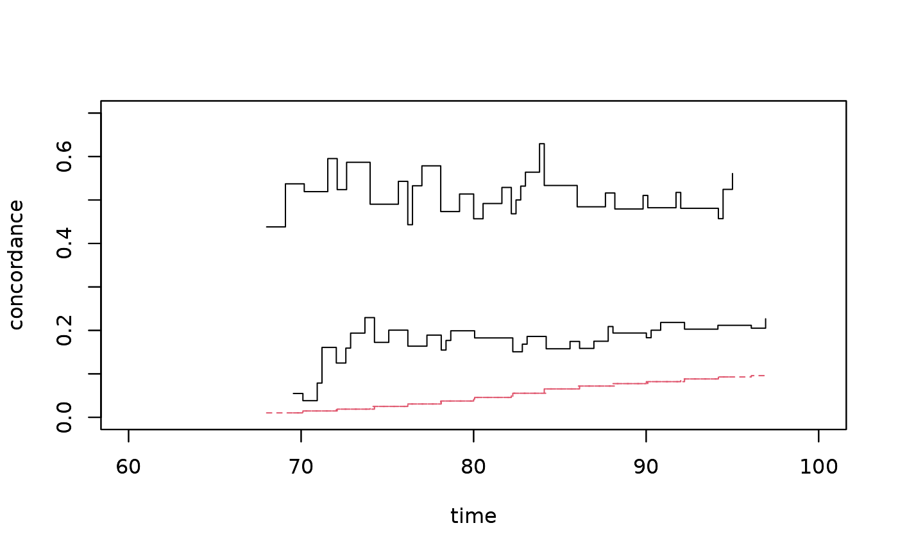

Estimates the casewise concordance based on concordance and marginal estimates, and performs tests for the independence assumption. This is particularly useful in twin studies to assess genetic vs. environmental contributions to disease risk.
Arguments
- conc
An object containing concordance estimates (e.g., from
bicomprisk). Must containtime,P1,se.P1, and ideallyP1.iid.- marg
An object containing marginal cumulative incidence estimates (e.g., from
comp.riskorprodlim). Must containtime,P1,se.P1, and ideallyP1.iid.- test
Type of test:
"case"(test on casewise concordance) or"conc"(test on concordance). Default is"no-test".- p
Threshold for checking that marginal probability is greater than this value at some point (default 0.01). Used to avoid division by near-zero probabilities.
Value
An object of class "casewise" containing:
- casewise
Matrix with time, casewise concordance, and standard errors.
- marg
Matrix with time, marginal CIF, and standard errors.
- conc
Matrix with time, concordance, and standard errors.
- casewise.iid
Influence function decomposition for casewise concordance.
- test
Test results (if
testis specified): Pepe-Mori type test statistics, standard errors, z-values, and p-values.- mintime, maxtime
Time range used for the analysis.
- same.cluster
Logical indicating if clusters were assumed identical.
- testtype
Type of test performed.
Details
The casewise concordance is defined as: $$ C(t) = \frac{P(T_1 \leq t, T_2 \leq t)}{P(T_1 \leq t)} $$ where the numerator is the joint probability of both twins having the event by time \(t\), and the denominator is the marginal probability.
The function supports two types of tests:
"case": Tests on the casewise concordance scale (difference between observed and expected under independence)."conc": Tests on the concordance scale (difference between observed concordance and squared marginal).
Standard errors are computed using cluster-based conservative estimates or influence functions (IID) if available from the input objects.
References
Scheike, T. H. (2024). Casewise concordance estimation and testing. mets package documentation.
Examples
## Reduce Ex.Timings
library("timereg")
data("prt",package="mets");
prt <- force_same_cens(prt,cause="status")
prt <- prt[which(prt$id %in% sample(unique(prt$id),7500)),]
### marginal cumulative incidence of prostate cancer
times <- seq(60,100,by=2)
outm <- timereg::comp.risk(Event(time,status)~+1,data=prt,cause=2,times=times)
cifmz <- predict(outm,X=1,uniform=0,resample.iid=1)
cifdz <- predict(outm,X=1,uniform=0,resample.iid=1)
### concordance for MZ and DZ twins
cc <- bicomprisk(Event(time,status)~strata(zyg)+id(id),
data=prt,cause=c(2,2))
#> Strata 'DZ'
#> Strata 'MZ'
cdz <- cc$model$"DZ"
cmz <- cc$model$"MZ"
### To compute casewise cluster argument must be passed on,
### here with a max of 100 to limit comp-time
outm <- timereg::comp.risk(Event(time,status)~+1,data=prt,
cause=2,times=times,max.clust=100)
cifmz <- predict(outm,X=1,uniform=0,resample.iid=1)
cc <- bicomprisk(Event(time,status)~strata(zyg)+id(id),data=prt,
cause=c(2,2),se.clusters=outm$clusters)
#> Strata 'DZ'
#> Strata 'MZ'
cdz <- cc$model$"DZ"
cmz <- cc$model$"MZ"
cdz <- test_casewise(cdz,cifmz,test="case") ## test based on casewise
cmz <- test_casewise(cmz,cifmz,test="conc") ## based on concordance
plot(cmz,ylim=c(0,0.7),xlim=c(60,100))
par(new=TRUE)
plot(cdz,ylim=c(0,0.7),xlim=c(60,100))
